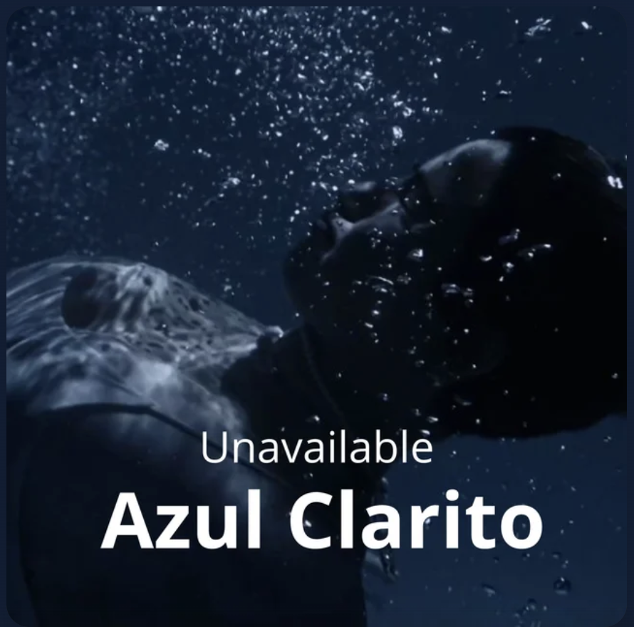

Electrónica
Unavailable
Una canción electrónica sobre la vulnerabilidad de enamorarse de alguien que no está emocionalmente disponible. Entre el deseo de acercarse y el miedo a salir herida, Azul Clarito expresa una petición íntima: me gustás mucho, pero, por favor, no me lastimés.
Escuchar